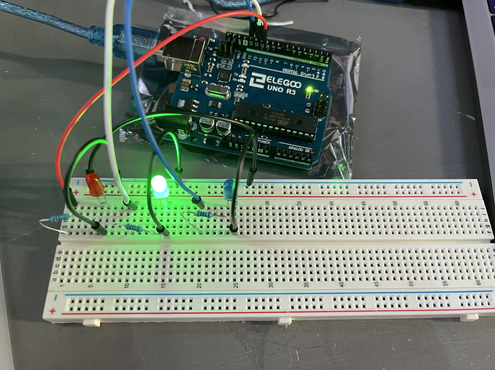
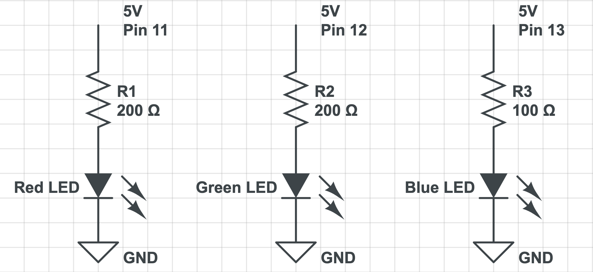
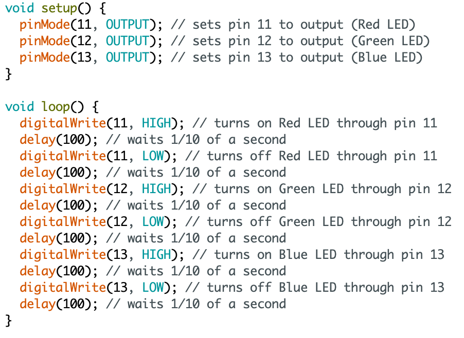

Michael Wentworth's Assignment 1!

Circuit for Assignment 1

Circuit in action, with each of the three LEDs being activated independently.

Schematic for the above circuit. Resistor values were chosen using Ohm's Law. With 5V from the pin, Red and Green LEDs need 160 Ohms of resistance, so 200 Ohm resistors are used. Meanwhile, Blue LEDs will need 85 Ohms of resistance, so 100 Ohm resistors are used.

Code for the Arduino Circuit